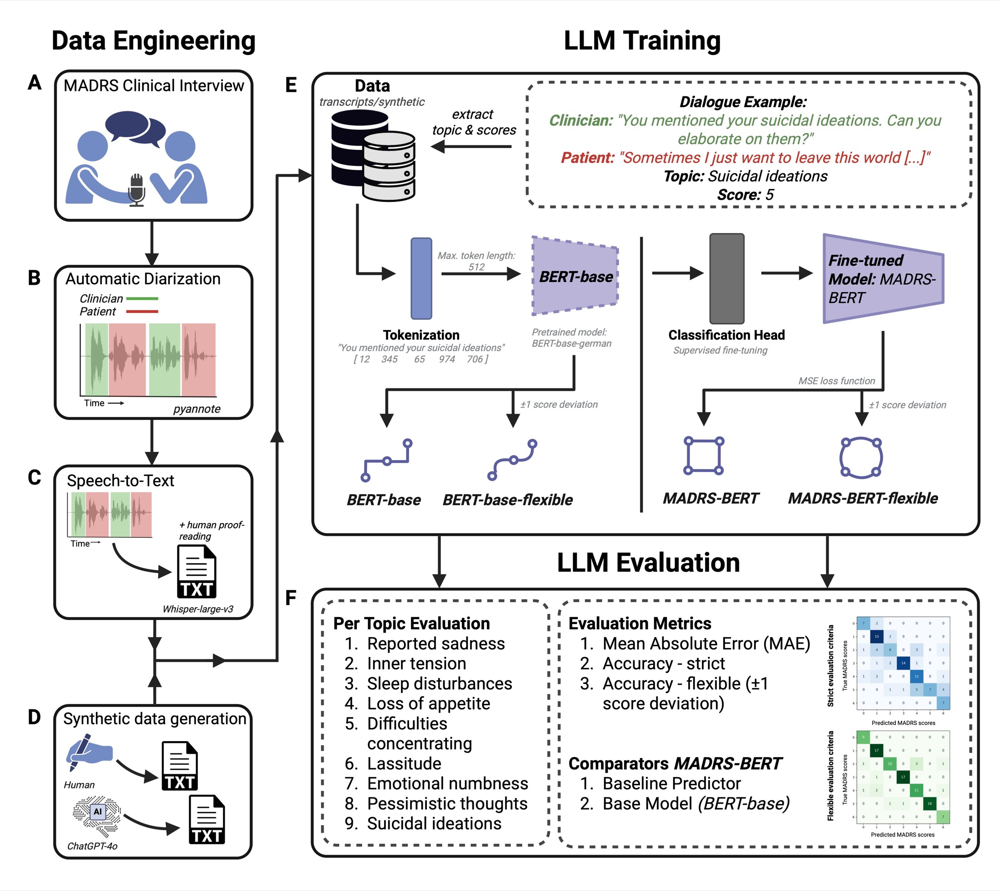
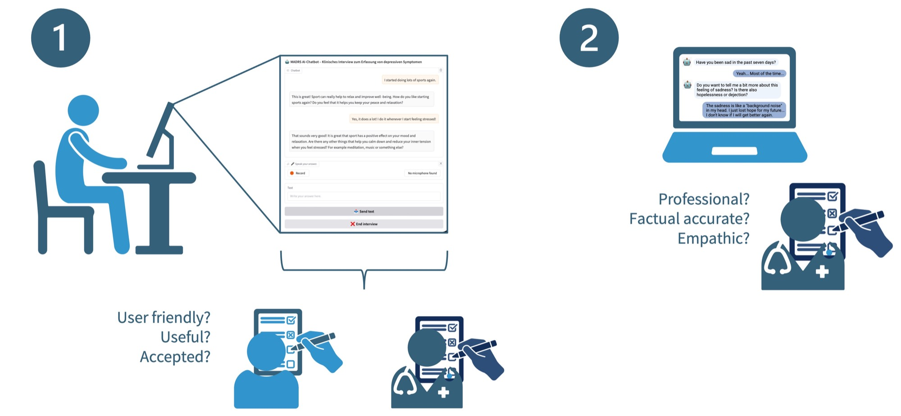
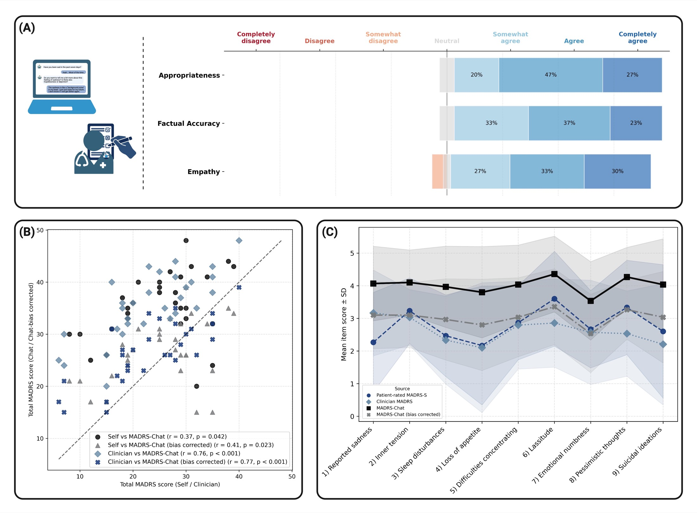

Featured Project 01
MADRS-Chat: AI-Assisted Depression Assessment
Building from structured scoring to real-time clinical dialogue: MADRS-BERT established reliable symptom scoring, then MADRS-Chat moved the full interview process into a clinically constrained conversational workflow.
Depressive symptoms are often not documented with enough depth or standardization in routine care because time is limited and interview quality varies across settings. MADRS (Montgomery-Asberg Depression Rating Scale) provides a structured clinician interview for nine symptom domains scored 0-6, but it remains time-intensive. Because MADRS is both language-based and tightly structured, it is a strong candidate for AI-assisted assessment support with clear boundaries: improve standardization and workflow efficiency without replacing clinical diagnosis or treatment decisions.
2. Phase I: MADRS-BERT - Teaching AI to Understand Clinical Symptom Presentation
Phase I focused on translating structured interview language into reliable symptom-level scores. We used a lightweight BERT-based setup by design, because hospital deployment requires scalable models with practical compute and maintenance needs. The workflow used a balanced fine-tuning cohort of 126 interviews (50:50 real transcripts and synthetic interviews), fine-tuned scoring per MADRS item, and evaluated strict accuracy, flexible accuracy (+/-1 score), and MAE with learning-curve checks.

- Objective: clinically interpretable item-level symptom scoring from structured interview text.
- Fine-tuning cohort: 126 interviews total, with an explicit 50:50 balance between real transcripts and synthetic interview data.
- External validation cohort: 30 new subjects, independently rated by 8 clinicians.
- Key validation: 8 clinicians rated 30 transcripts; mean clinician-clinician ICC = 0.92, model-clinician mean ICC = 0.78.
- Evaluation protocol: strict accuracy, flexible accuracy (+/-1), MAE, and learning-curve analysis to check data sufficiency under psychiatric variability.
- Performance: up to 88% item accuracy, MAE as low as 0.7.
3. Phase II: MADRS-Chat - From Understanding to Dialogue
Phase II moved from post-hoc scoring to end-to-end interview delivery. MADRS-Chat conducts the structured assessment directly with patients and then applies symptom scoring through the separated scoring model. Project-wise, this phase added operational goals: feasibility in real care settings, user acceptance, and clinician-facing quality validation. The core rationale is workflow standardization: if symptom interviews become more consistent across time and raters, clinical teams gain better longitudinal comparability, clearer handovers, and more efficient pre-visit assessment.

- Stakeholders: patients (acceptability/usability) and clinicians (professional quality, factuality, empathy, usefulness).
- Architecture: conversational model (Llama-3.1-8B) separated from symptom scoring (MADRS-BERT) for controllability.
- Validation: agreement with clinician and self-rated MADRS plus bias-aware calibration.
- Operational output: feasible deployment pathway for assessment/monitoring support in psychiatric workflow.
